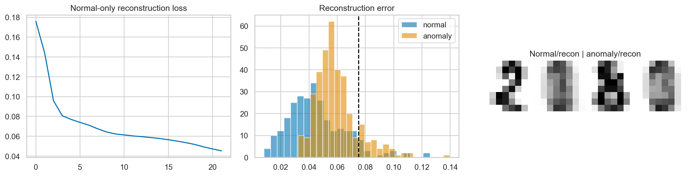

ML Hands-on Lab · 09 — Neural networks
Autoencoders for anomaly detection
An autoencoder learns to reconstruct normal inputs through a narrow bottleneck. Reconstruction error can then rank unfamiliar inputs, but a good reconstruction model is not automatically a good anomaly detector.
Read this page independently, then run the notebook cells in order. The figure below is a preserved historical notebook output; no model training was rerun for this editorial revision.
1. The experiment and its boundary
The notebook uses real 8×8 handwritten images from sklearn.datasets.load_digits, scaled by the fixed pixel maximum of 16. Digits 0–4 define normal behavior; digits 8–9 are evaluation anomalies. Digits 5–7 are excluded. Labels define the teaching experiment, but they are not targets in reconstruction training.
The normal images are split 70/30. The last 150 images of the normal training pool are reserved for threshold calibration; the rest fit the network. The evaluation pool contains the normal holdout plus all selected anomaly images. Its anomaly fraction is deliberately constructed, not a production prevalence estimate.
2. The mechanism
The encoder maps 64 pixels to 24 hidden units and then to a five-number latent code. The decoder expands that code through 24 units back to 64 pixels. ReLU supplies nonlinearity; the final sigmoid keeps reconstructed pixels between zero and one. The training target is the input itself.
z = encoder(x)
x_hat = decoder(z)
score(x) = mean((x − x_hat)²)
threshold = 95th percentile of calibration scores
Adam minimizes the average pixel error on normal fitting images. A sample is flagged if its error reaches the threshold. Setting the threshold from normal calibration data avoids choosing it on the anomaly evaluation labels. About 5% of calibration scores lie above a 95th-percentile threshold; that is not a guarantee of a 5% future false-alarm rate.
3. Work through a tiny example
For pixels [0, 1, 1, 0, .5] and reconstruction [0, .9, .8, .1, .4], squared errors are [0, .01, .04, .01, .01]. Their sum is .07, but their mean is .014. The notebook uses the mean across 64 pixels, so a threshold built for summed error would be on the wrong scale.
Now imagine an unfamiliar digit reconstructed almost perfectly. Its anomaly score will be small even though its class is new. The detector recognizes reconstruction difficulty, not the semantic concept “anomaly.”
4. Settings that change this experiment
| Notebook setting | What it changes |
|---|---|
| Bottleneck: 5 units | A wider code can reconstruct more detail, including anomaly patterns; a very narrow code can blur normal digits too. |
| 22 epochs, Adam lr=.005, batch 64 | Watch normal fitting loss, but also inspect score overlap. Lower loss alone does not establish better detection. |
| Calibration quantile: .95 | A .90 threshold flags more inputs; .99 flags fewer. Check precision and missed anomalies at each threshold on a separate labeled evaluation set. |
5. The actual notebook operation
These are the actual core operations from the matching notebook, reformatted for readability. They use the data, imports and variables defined in earlier cells; open the notebook to execute the complete experiment.
Notebook cell 12 · counting all cells from 1
torch.manual_seed(SEED)
ae = nn.Sequential(nn.Linear(64, 24), nn.ReLU(), nn.Linear(24, 5), nn.ReLU(), nn.Linear(5, 24), nn.ReLU(), nn.Linear(24, 64), nn.Sigmoid())
opt = torch.optim.Adam(ae.parameters(), lr=0.005)
losses = []
for epoch in range(22):
total = 0
for (xb,) in loader:
opt.zero_grad()
loss = nn.functional.mse_loss(ae(xb), xb)
loss.backward()
opt.step()
total += loss.item() * len(xb)
losses.append(total / len(fit))
with torch.no_grad():
cal_err = ((ae(torch.tensor(cal)) - torch.tensor(cal)) ** 2).mean(1).numpy()
threshold = np.quantile(cal_err, 0.95)
print('Threshold:', round(threshold, 4), 'loss first/last:', round(losses[0], 4), round(losses[-1], 4))6. Baseline and what the metrics mean
Average precision (AP) evaluates the ranking produced by reconstruction error over many thresholds. The printed reference is truth.mean(), the positive fraction in this constructed mixture: the expected precision level for a non-informative ranking. The notebook also reports precision among flagged inputs at the calibrated threshold. Neither score alone tells you recall or the number of normal inputs falsely flagged.
7. Read the historical figure

- Left: the historical normal-only loss falls. This establishes optimization progress, not anomaly detection success.
- Middle: normal and anomaly errors overlap substantially. The dashed threshold sits to the right of many anomaly scores, so a visually separated average still leaves missed anomalies.
- Right: original/reconstructed normal and anomaly pairs expose which strokes the bottleneck loses. One attractive pair cannot establish performance over the full pool.
8. Break the assumption
The final experiment copies the trained network, adds the first 300 evaluation anomalies to its fitting data and takes 18 more optimization steps. Reconstructing those anomalies can become easier, weakening error as a detector. Compare AP before and after without assuming the direction or magnitude in advance.
This is an illustrative contamination failure, not a controlled causal estimate. The second model both sees evaluation anomalies and receives extra training. A clean comparison would create a separate contamination pool and give clean and contaminated models the same initialization, sample budget and optimization budget.
9. Exercises with a decision to explain
- Try bottlenecks of 2, 5 and 32. Record normal calibration errors, AP, flagged precision and anomaly recall; do not select a winner on the final test pool.
- Compare .90, .95 and .99 calibration quantiles. Explain the false-alarm versus missed-anomaly tradeoff rather than calling the lowest threshold best.
- Build a controlled contamination extension with anomalies that never appear in the final evaluation pool. Keep the clean-model training budget equal.
10. Run and inspect
Change one assumption at a time, keep the appropriate evaluation boundary, and compare the actual results. A baseline win or an inconclusive result is useful evidence.